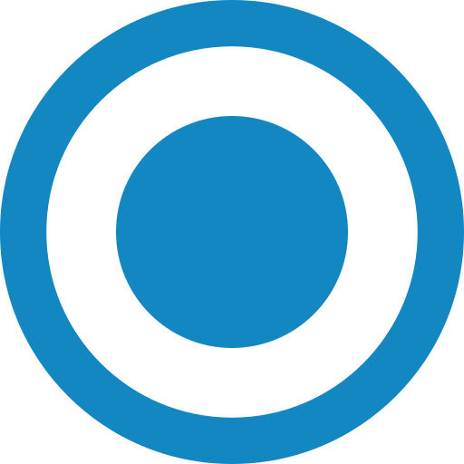

Education

School Graduation
2021-2022
Ghulam Haider Khan High School
This academic discipline shaped my analytical mindset and sparked my passion for technology and building logical, efficient solutions.
Bachelor of Computer Science
2022-2026
Balkh University
I am completing my Computer Science degree this summer, where I built a strong theoretical and practical foundation in software development, algorithms, and system design.